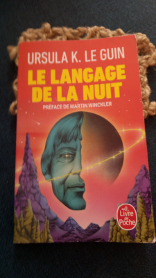
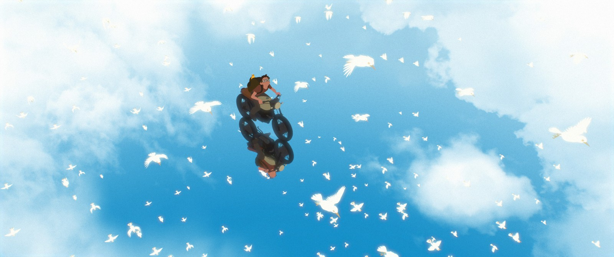

Le brouillon du rêve
Ursula K. Le Guin est connue pour ses nombreux romans de fantasy et de science-fiction, notamment La main gauche de la nuit, ou le cycle Terremer. De la deuxième œuvre j’ai seulement vu l’adaptation Les Contes de Terremer par Ghibli. Le nom de l’auteure américaine ne m’était pas inconnu, passant par-ci par-là dans une vidéo de la formidable chaîne Worldbuilding Notes sur Youtube. C’est alors que dimanche dernier (le 13 septembre 2020), je voyais à Paris Johyn Papin, et nous sommes allés à la FNAC de Châtelet, lieu vaste et fourmillant d’activité.
Ainsi donc j’ai acheté Le Langage de la nuit, recueil d’essais de Mme Le Guin à propos de son art (ISBN 9782253083528). Mais quel est donc son art ?

On en pourrait donner une définition grandiloquente et verbeuse, dire quelque chose de stupéfiant avec des mots rares. Cependant, d’abord je n’ai jamais lu les romans d’Ursula K. Le Guin, ensuite, d’après ses essais, ce n’est visiblement pas son truc.
Ce qui est important… non, tout est important dans ce livre… quelques choses qui m’ont marquées, que le présent article servira à me rappeller, sont entre autres : la singularité de l’écriture de récits face à la musique ou à l’image ; l’œuvre comme tentative de l’auteur de se rapprocher d’une vision d’un personnage ; l’exigence et le rêve – l’exigence du rêve, dirais-je même.
Lorsque j’écoute un morceau de musique, comme Anchored, par Rakoon, je peux entendre, mais aussi voir, toucher, ressentir la présence de personnages. C’est ce morceau qui m’a donné l’inspiration de la nouvelle que je suis en train d’écrire. La musique offre un sentiment absolu, une présence vraie et définitive. Avec un roman, c’est pour Le Guin plus difficile, le texte est moins présent dans son entier que ne l’est un morceau de musique ou une illustration.
Un exemple qui serait l’opposé total d’un roman, de ce point de vue, serait le film du letton Gints Zilbalodis, Away.

Ce film d’animation sans paroles, scénarisé, modélisé en 3D, animé, mis en musique entièrement par son réalisateur qui a par ailleurs est à peine plus vieux que moi – ah, qu’est-ce que j’aurais déjà pu faire… ce film est pour moi une merveille d’animation, l’absence de voix et les animaux étant les seuls accompagnants du personnage principal, le petit monde, l’enchaînement des séquences, rendent ceci très onirique. Aussi, j’en écoute très souvent la musique. C’est un film assez émouvant pour moi.
Ainsi donc, peut-on produire, par les mots, par un récit, de l’émotion pure ? Ou au contraire, le langage, faculté intellectuelle s’il en est, ne nous éloigne-t-il pas de nos sentiments ?
Je ne peux parler qu’en tant qu’auteur. Il faudrait demander à un compositeur, à un illustrateur, son point de vue sur l’expression du sentiment par l’art.
Pour revenir au Langage de la nuit, voici ce qu’écrit Ursula Le Guin à propos de la vision du personnage :
Il s’agissait d’une vision non pas ironique, mais romantique, de sorte que je voyais deux petites figures, fort lointaines, perdues dans un immense désert de glace et de neige. Elles étaient en train de tirer une sorte de traîneau, de transporter quelque chose ensemble. Je ne voyais rien de plus ; je ne savais pas qui elles étaient. Je ne savais même pas de quel sexe elles étaient (et je dois avouer que j’ai été très surprise quand je l’ai appris). Mais c’est ainsi qu’a commencé la rédaction de mon roman La Main gauche de la nuit, et quand je pense à ce livre, c’est encore et toujours cette image que je vois. Tout le reste, tous les réagencements de la sexualité humaine, toutes les thématiques de trahison, de solitude et de froid, représentent ma tentative de rattraper mon retard, de m’approcher, d’aller là où j’avais vu ces deux silhouettes sur la neige, isolées et ensemble.
— Ursula K. Le Guin, Mme Brown et la science-fiction, 1976 (traduction de Francis Guévremont)
Les mots parlent d’eux-mêmes, mais je voudrais juste mettre en exergue un petit mot : « j’ai été très surprise quand je l’ai appris ». L’auteure apprend qui sont les personnages qui se présentent à sa conscience, elle ne les inventent pas par une réflexion algorithmique. La « méthode » pour créer un personnage, n’est pas (simplement ?) de suivre des étapes et de remplir une liste de traits de personnalité, idéaux moraux, attaches au monde et défauts, mais il s’agit surtout de laisser l’âme du personnage venir à soi et de la transcrire en notions concrètes, comme on exprimerait ce qu’est un arbre par l’organisation de ses feuilles, la couleur et la finesse de son écorce, alors qu’il s’agit en réalité d’un bouleau dont on peut peler la surface comme du papier et même écrire dessus, ce qui est bien plus qu’une capacité biologique, c’est carrément magique si vous voulez mon avis.
Il faut donc rêver, et poser son rêve sur papier (ou dans un fichier numérique), avec force exigence envers soi-même. Une qualité qui me semble alors capitale, à toutes les étapes, de l’imagination du monde à la rédaction du récit en passant par le plan narratif, les fiches de personnages… une qualité capitale, dis-je donc, est la fidélité à son rêve.
On ne peut pas faire de compromis avec la magie.
— Moi, laitues.net, maintenant. (hoho)
Dans cet article qui commence à être un peu long, j’aurais encore deux choses à rajouter : remerciements à Mme Le Guin, et une idée, la création de monde suivant le personnage.
J’ai donc commandé hier soir (j’ai craqué) le livre des trois premiers romans de Terremer (par Ursula K. Le Guin, donc) en anglais. Je ne sais pas trop à quoi m’attendre, mais j’ai hâte. Ce point de la vision initiale à suivre lors de la création est ce qui m’a le plus marqué dans Le Langage de la nuit, sûrement par sa nouveauté pour moi. En fait, je n’avais pas tellement eu l’occasion d’entendre ça, et ça colle bien au fait que les idées qui marchent pour moi, que je concrétisent en textes achevés, viennent de visions de cette sorte, voire de rêves. On entend parler de structure narrative en 3 actes, de l’importance d’un thème (c’est-à-dire du message à transmettre), des règles de cohérence pour la magie ou la science-fiction, mais qu’en est-il du rêve ? De l’étincelle initiale qui nous lance dans un projet artistique ?
Arrêtons de chercher à créer du rêve de manière scientifique, parce que la science est objective, méthodique et froide, tout le contraire de l’art réel, celui qui parle au cœur.
Et finalement, je crois que je vais me replonger dans la création de monde (voir l’indispensable r/Worldbuilding sur Reddit), pas en partant d’un « et si… ? » comme je faisais avant, qui développait dans toutes les directions sans but réel, se diluait et finissait par s’évanouir par manque d’intérêt et d’importance, mais plutôt, créer un monde centré autour d’une vision, d’un personnage, d’une image et d’une émotion. Tout, dans l’œuvre, devrait se rapporter à, servir la réalisation de cette vision.
Travailler à réaliser ses rêves, c’est suivre un chemin que l’on ne peut connaître que pas à pas, et si l’on écoute la voix du sentiment.
Merci d’avoir lu, maintenant, rêvez plus fort.
— Quentin Ribac.